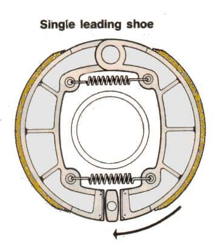

Repair / Brakes
Brakes
Problems, repairs and parts for the brakes.

Problems
- ABS warning light is onRide with care
- Brake drags and the wheel does not spin freelyDo not ride
- Brakes get weaker when hotDo not ride
- Brake fluid is dark or lowRide with care
- Brake fluid is leakingDo not ride
- Brakes grind or scrapeDo not ride
- Brakes pulse or judderRide with care
- Brakes squealRide with care
- Brake caliper sticks or is seizedDo not ride
- Combined braking (CBS) does not work as it shouldDo not ride
- Drum brake squeaks or grindsRide with care
- Drum brake is weakDo not ride
- Brake lever slowly sinks when heldDo not ride
- Brake lever pulls back to the handlebarStop now
- Brake pads wear unevenlyRide with care
- Rear brake pedal travels too farDo not ride
- Brake lever or pedal feels spongyDo not ride
- Brakes are firm but do not stop the bike wellDo not ride
- Wheel locks too easilyDo not ride
Repairs
- Check brake fluid level and conditionRider job · 5 min
- Check brake hoses and banjo boltsRider job · 10 min
- Check brake pad wearRider job · 5 to 10 min
- Replace brake fluid and bleed the brakesHome workshop · 30 to 60 min per circuit
- Check the brake master cylinderWorkshop job · 15 min assessment; overhaul time set by the workshop
- Rebuild a brake caliperWorkshop job · 15 to 30 min assessment; rebuild time set by the workshop
- Check a combined braking system (CBS)Workshop job · 15 to 30 min assessment
- Diagnose an ABS warning lightWorkshop job · 15 to 30 min assessment
- Adjust a drum brakeRider job · 5 to 10 min
- Service a drum brakeHome workshop · 45 to 90 min per wheel
- Check a brake discHome workshop · 20 to 40 min
- Check wheel bearingsHome workshop · 15 to 30 min
- Replace disc brake padsHome workshop · 30 to 60 min per caliper
- Clean a brake caliper and free the pistonsHome workshop · 45 to 90 min per caliper
- Inspect the front forksRider job · 10 min
- Check for brake dragHome workshop · 15 to 30 min
- Check the steering head bearingsHome workshop · 10 to 20 min
- Check a wheel for runoutHome workshop · 20 to 30 min
- Adjust the rear brake pedalHome workshop · 15 to 30 min
- Service brake and clutch lever pivotsRider job · 15 to 30 min
- Lubricate control cablesRider job · 20 to 40 min
- Check and adjust chain slackRider job · 20 to 30 min
- Check tyre pressureRider job · 5 min
- Check the rear shock absorbersHome workshop · 15 to 30 min
- Check fuses and relaysRider job · 10 to 30 min
- Test and charge a 12 V batteryHome workshop · 15 min to test; charging takes many hours
- Clean and seal electrical connectorsHome workshop · 15 to 45 min